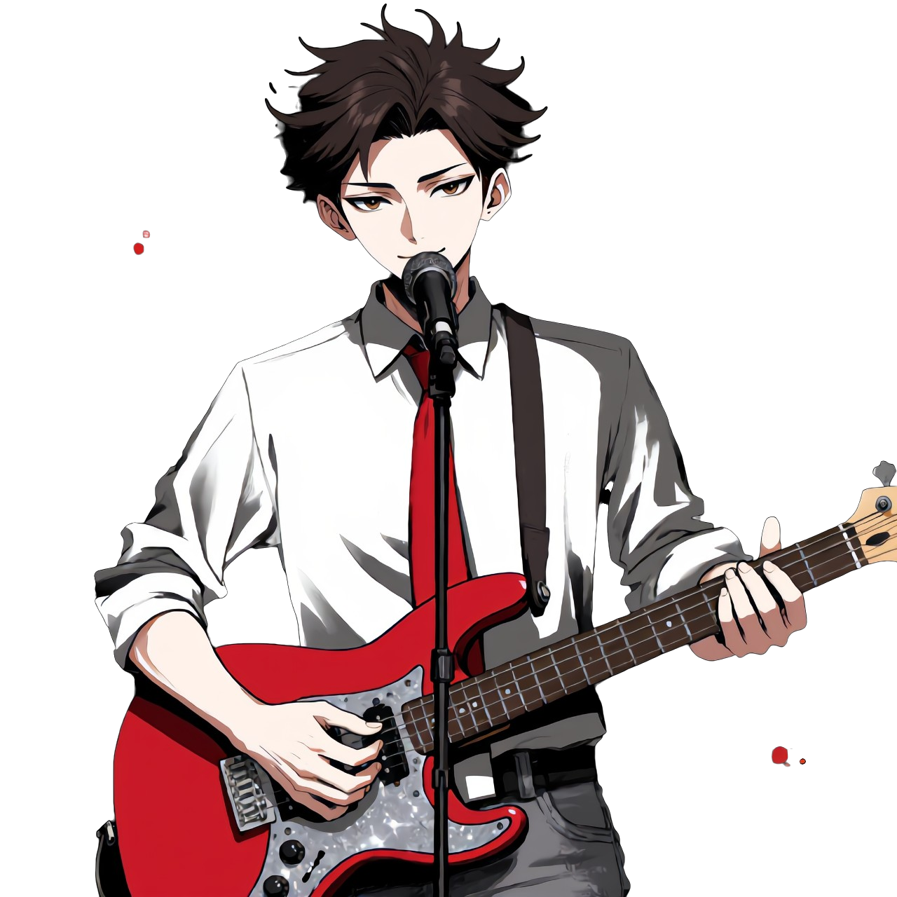

Степа

Вокал • Ритм-гитара • Тексты
Лидер и архитектор группы. Пишет тексты, собирает звук, держит всё вместе. На сцене — спокойная мощь, за сценой — стратег с блокнотом. Тот самый парень, который цитирует Грибоедова и тут же рвёт струны.